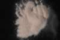

|
|
(For further information on spectroscopy, see:
http://speclab.cr.usgs.gov)
TITLE: Andalusite NMNHR17898 DESCRIPT
DOCUMENTATION_FORMAT: MINERAL
SAMPLE_ID: NMNH17898
MINERAL_TYPE: Nesosilicate
MINERAL: Andalusite
FORMULA: Al2SiO5
FORMULA_HTML: Al2SiO5
COLLECTION_LOCALITY: St. Theresa, Espirito Santo, Brazil
ORIGINAL_DONOR: National Museum of Natural History
CURRENT_SAMPLE_LOCATION: USGS Denver Spectroscopy Laboratory
ULTIMATE_SAMPLE_LOCATION: USGS Denver Spectroscopy Laboratory
SAMPLE_DESCRIPTION:
Forms series with Kanonaite. Trimorphous with Kyanite and Sillimanite.
The structure consists of chains of AlO6 octahedra parallel to c, cross-linked by SiO4 tetrahedra and AlO5 polyhedra. Andalusite is typically formed in the contact aureoles of igneous intrusions in argillaceous rocks.
"Results of petrographic examination: Sample is composed of two crystals, one clear and one pale pink. Both appear pure, both 1 x 0.5 cm. Examination under petrographic microscope indicates pure and clean sample. Sample grains chosen for microprobe analysis are clear but with poor polish in part. "
Salisbury, J. W., Walter, L. W., and Vergo, N., 1987, Mid-Infrared (2.1-25µm) Spectra of Minerals: First Edition, U.S. Geological Survey Open File Report 87-263.
There are weak absorption features near 2.2 and 2.35 µm due to trace alteration not seen by other methods. -Roger N. Clark
IMAGE_OF_SAMPLE:

END_SAMPLE_DESCRIPTION.
XRD_ANALYSIS:
Pure. (Norma Vergo)
Pure.: Salisbury, J. W., Walter, L. W., and Vergo, N., 1987, Mid-Infrared (2.1-25µm) Spectra of Minerals: First Edition, U.S. Geological Survey Open File Report 87-263.
END_XRD_ANALYSIS.
COMPOSITIONAL_ANALYSIS_TYPE: EM # XRF, EM(WDS), ICP(Trace), WChem
| COMPOSITION KEYWORD |
Oxide ASCII |
Amount | Weight Percent, % |
Oxide html |
|---|---|---|---|---|
| COMPOSITION: | SiO2 | 37.19 | wt% | SiO2 |
| COMPOSITION: | TiO2 | 0.03 | wt% | TiO2 |
| COMPOSITION: | Al2O3 | 63.62 | wt% | Al2O3 |
| COMPOSITION: | FeO | 0.26 | wt% | FeO |
| COMPOSITION: | MnO | 0.01 | wt% | MnO |
| COMPOSITION: | MgO | 0.06 | wt% | MgO |
| COMPOSITION: | CaO | 0.02 | wt% | CaO |
| COMPOSITION: | Na2O | 0.02 | wt% | Na2O |
| COMPOSITION: | K2O | 0.01 | wt% | K2O |
| COMPOSITION: | Total | 101.22 | wt% | |
| COMPOSITION: | O=Cl,F,S | wt% | #correction for Cl, F, S | |
| COMPOSITION: | New Total | wt% |
COMPOSITION_TRACE: None
COMPOSITION_DISCUSSION:
"Microprobe analysis shows the sample to be homogeneous within and between grains. Average of 10 analyses, indicating close to end member composition."
Salisbury, J. W., Walter, L. W., and Vergo, N., 1987, Mid-Infrared (2.1-25µm) Spectra of Minerals: First Edition, U.S. Geological Survey Open File Report 87-263.
END_COMPOSITION_DISCUSSION.
MICROSCOPIC_EXAMINATION:
avg. grain size = 245µm
Mixed pink & clear grains, mostly conchoidal fracture, some cleavage planes, length fast, high relief, moderate 2V, biaxial (-), pink pleochroism. All this is consistent with andalusite. G. Swayze
END_MICROSCOPIC_EXAMINATION.
SPECTROSCOPIC_DISCUSSION:
END_SPECTROSCOPIC_DISCUSSION.
SPECTRAL_PURITY: 1c2c3b4_ # 1= 0.2-3, 2= 1.5-6, 3= 6-25, 4= 20-150 microns
| LIB_SPECTRA_HED: | where | Wave Range | Av_Rs_Pwr | Comment |
|---|---|---|---|---|
| LIB_SPECTRA: | splib04a r 345 | 0.2-3.0µm | 200 | g.s.= |
| LIB_SPECTRA: | splib05a r 949 | 0.2-3.0µm | 200 | g.s.= |
| LIB_SPECTRA: | splib06a r 1987 | g.s.= | ||
| LIB_SPECTRA: | splib06a r 2001 | g.s.= | ||
| LIB_SPECTRA: | splib06a r 2046 | g.s.= |
{kind=link}